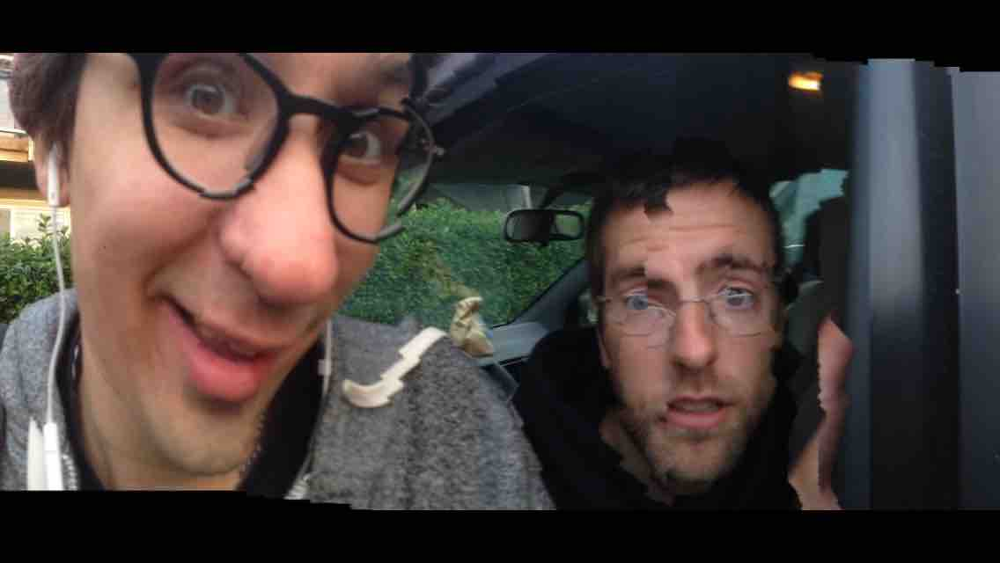
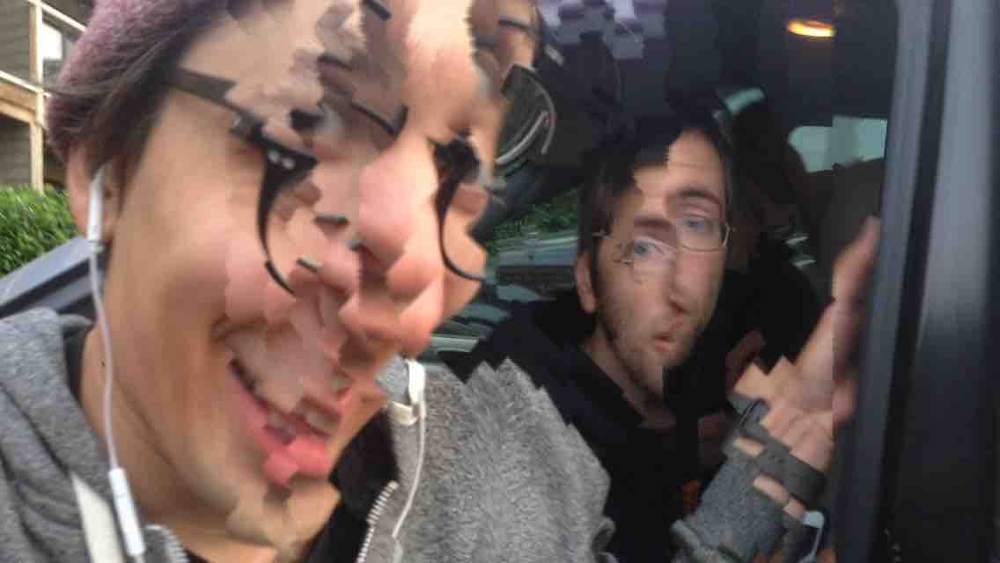
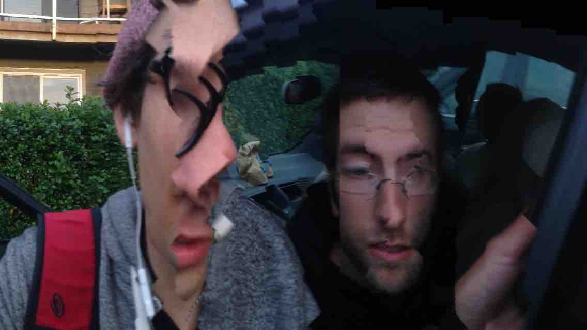
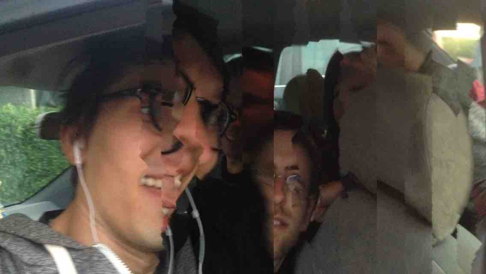
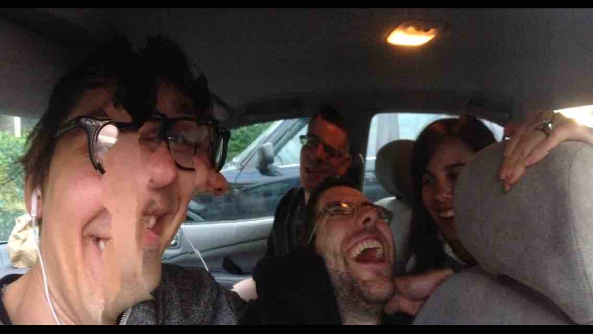
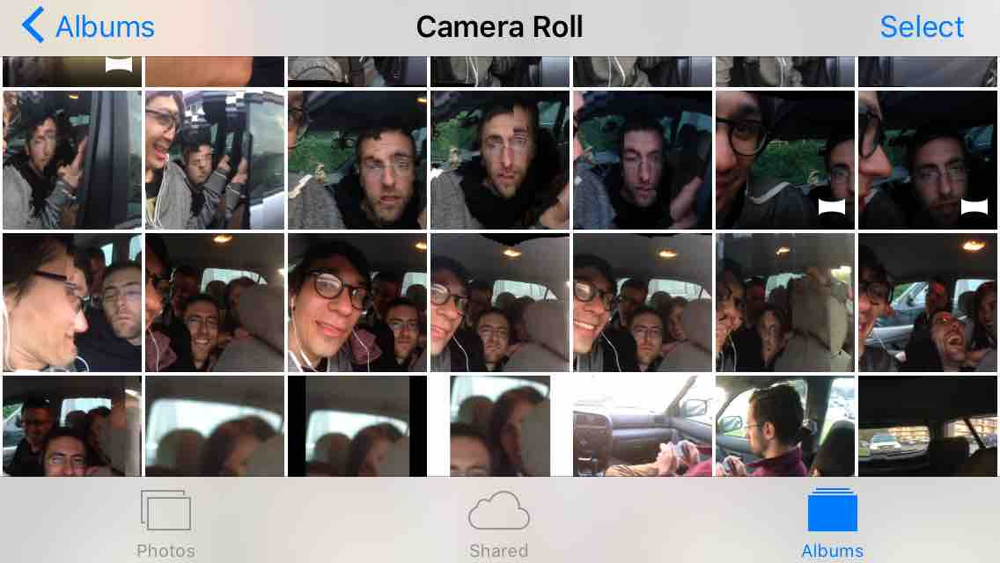
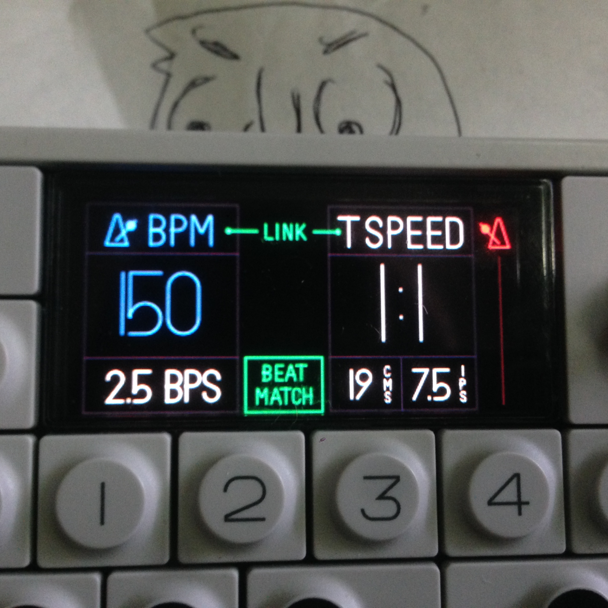
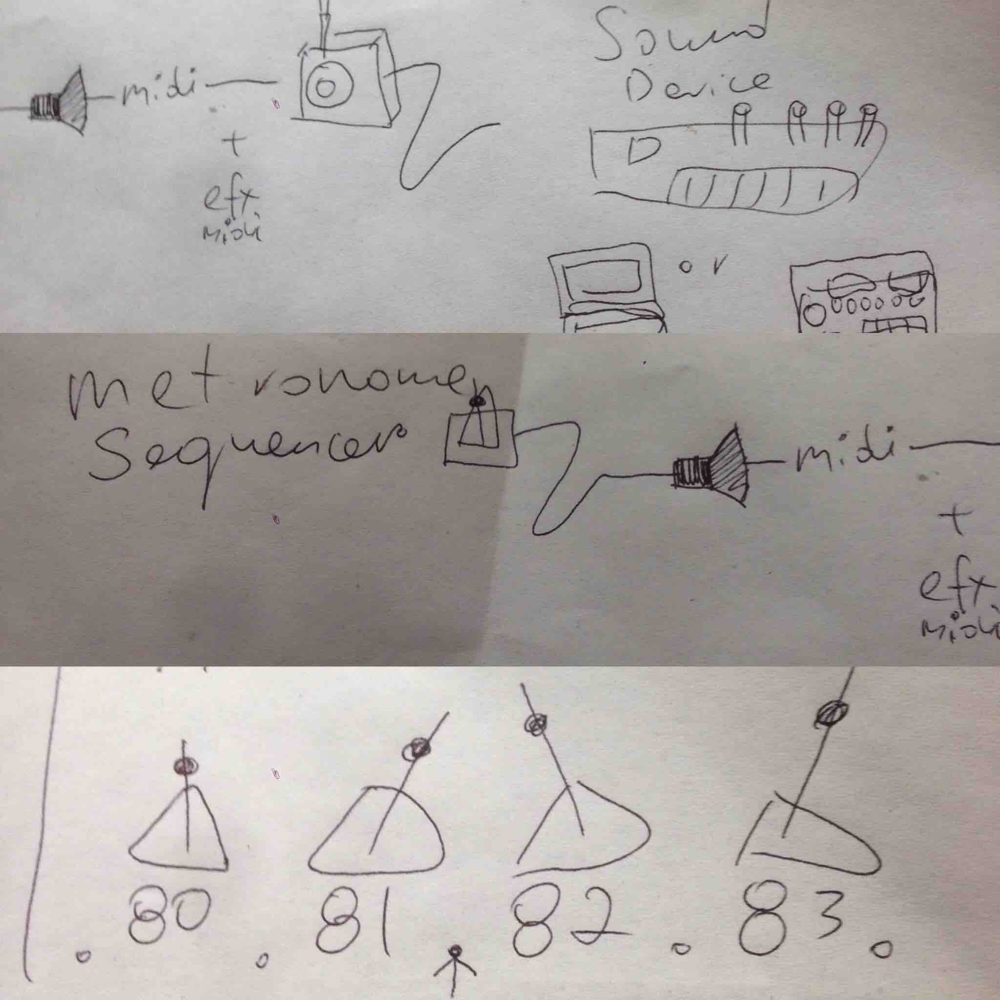

Today at the beach I needed shorts but I have not owned a pair in several years. So I decided to take the plung and make my own shorts as quickly and thirfty as possible. I often carry a pair of scizzors with me, so I cut off the lower halfs of my old jeans to make new shorts. This worked well and I am happy with how they turned out.
I drew some sketchs for ideas of electronic bead - type modules that you can wire together to make a functional bracelet. That idea is a bit in the future so I seattled for using a yarn scrap I had and wrapping it around my wrist to make a bracelet. This one will fall off on its own or will need to be cut off when the wearer gets bored.
hE}@#e���~rZ��CJb��fV��.2z��)�cyf�,:��� ����hb��:��KM��?�o���tͳ&�l����¦6�͊sa��6V )�@�H�� ��D�D�O����\�J�j\�$��\�}�̇�@)9��b6̪@�6�[ �'\��-K{FV�.=��ڀ��� ]7���y����]y�'? ����_�*�?5*������ =��u�]h���8 �+��ؽ؊K~�������H{{|���y�jqP�B��z0��Z�:ߚ ��z�� �=�H���\���}kأ��(B�D�%<��C�������>���eR��oǘY����4�{5��S�xtS��~�~�|N��M`O)�� �M�l�� E���0+h \%�L:��~&��`���=�g�z�2�,-9vA���[�,D��l�0�!�������l�!h��Q���z�OćN�BT�ðH`ȋ�@��V�i2�`�� ���x��T�f&e�TB"�8�)�x�<��FW��ztM+QX�K����`RY��gӬ�6� ��a�k-Q7k�,�y�e����l�o�����~��,8�064L2>!ۥ!���9�а(�S Z˥��<�a�cK+o�H[��\��0�k8H:I�4�LB� W��F���b8"W���H2+�"�n� �a��&�����2�o���zy�}XP�0�9��0Y�2�J3# �a�n�cN�+�ie�0t�ug�Vc�p¬(���s m�BD`IDf�1�]�Dp�H^>\p��;�SH�0�u�G��q-R-���ny����N(��I��EQ�5��N=��^g��^���u{�乍V��o������hO�/�Oi��@7��N�|VK���6�4�kytj�T��x��V�.0X]0[�w��7�=ԃ-�#� .��($l��|��-���l��D� [�pYzU{��IJ����ݹ^�Uݱ�`���],�"�u:I������,�}�������1GJ��`qb��l=0y��0fa^��H��;=��WӺ��l�(B�"��� i:M�O��4��h�4E֏|.X ^Awar_��|Y����`/�ARg��U�=G�L�0ļd�� )�a��2P$�1l�I�h7�[n�|�[
I enjoy playing with panaramas and glitching them out. Someday maybe this will be automated for me.
     Autoplay audio - A recording of us durring the panaroma photographing
[x] - Do a BlogPost
[ ] - Make a mini Galary
[ ] - Arrows to change photos
[ ] - Do a Panorama Viewer Project Page
[ ] - Add Light Box
[ ] - Make it - Fullpage not 2/3 - Larger Photos?
[ ] - On mouseOver start to play audio
Here I tried to make some music with a metronome and an echo effect. I was able to make some pleasent sounds that I liked, the most important thing that came out of this was the idea to make an instrument with several metronomes that you can controll precisely and they output a midi note / trigger to play sound devices.
 Hebocon was a blast. I arrived not prepared for the event, and promptly found out that there is a build time before the event for putting together a robot the day of. I was super into that and pompty jumped on board. I found things around ^H to use as meterials to build. Big thanks to Bill for bring some spare motors and battery parts for people to use. I worked on the bot for nearly 2.5 hours and half way through Gary joined in to help. The main issue we had to over come was the big wheel axel would not stick to the moter. This caused the wheels to slip. Gary thought of a good solution to it by using friction from jamming thin metal rods in between the axel and motor. That worked great and together we finished the bot with no time to spare. We dubbed it Popcorn-Bot after one of the materials Gary wimsically used to create padding pads for supporting the heavy battery on top of the motor. In the end our bot ended up winning. Woohoo.
Big thanks to my partner in bot creation Gary, Bill for bring the parts and sparking ideas, Brian for hosting the whole event and making things run smoothly and control H for the awesome environment.